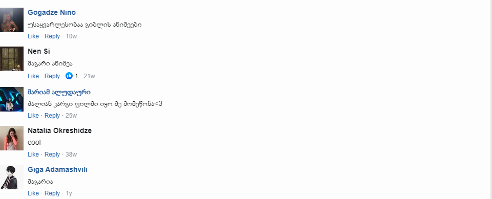

ქვეყანა:იაპონია
რეჟისორი:ჰაიაო მიაძაკი
იაპონია, გასული საუკუნის 50-იანი წლები. ორი პატარა და - საცუკი და მეი სოფელში გადადიან საცხოვრებლად. გოგონები ტყეში საოცარ სამყაროს აღმოაჩენენ, რომელიც არაჩვეულებრივი ფუმფულა არსებებით - ტოტოროებითაა დასახლებული. ისინი მათ მალევე დაუმეგობრდებიან. ზოგი მათგანი ვებერთელაა, ზოგიც მინიატურული, მაგრამ ყველას აქვს კეთილი გული და მაგიური ძალა.
